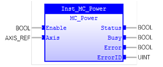
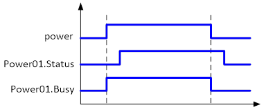
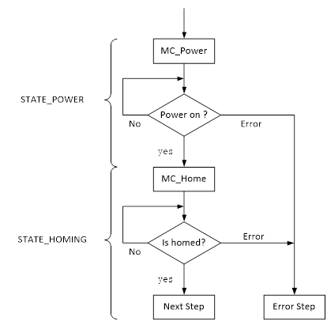
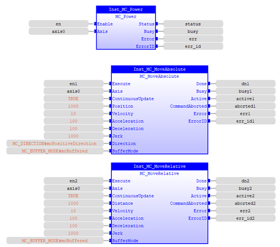
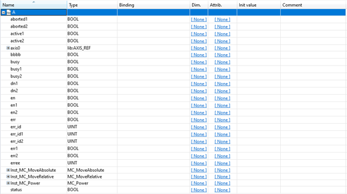

Controls the power stage (ON or OFF).

This function block controls the power stage (On or Off).
When ‘Enable’ changes to TRUE, the axis specified by ‘Axis’ is made ready to operate, then output ‘Status’ can be changed to TRUE. You can control the axis when ‘Status’ is TRUE.
You cannot control the axis when ‘Status’ is FALSE. The output ‘Status’ will change to FALSE if ‘Enable’ changes to FALSE. The output of the operation command will stop, and the axis will no longer be ready for operation.
The function block can be called from the axis state ‘Disabled’, or ‘ErrorStop’ for enabled axis. If no errors are present on the axis, its state will be ‘Standstill’ when ‘Enable’ is TRUE.
The function block can be called from any state for the axis disable. If no errors are present on the axis, its state will be ‘Disabled’ when ‘Enable’ changes to FALSE.
You can use this function block for servo axes or non-servo axes. Only one FB should be issued per axis. It can generate an unexpected issue otherwise.
You can use this instruction to disable the operation of axes while they are in motion, and all motion commands will be cleared.
When ‘Enable’ changes to TRUE, ‘Busy’ (Executing) changes to TRUE to indicate that the instruction was acknowledged. ‘Status’ will not change to TRUE until ‘Enable’ changes to TRUE and the processing is finished at the axis. After ‘Status’ changing to ‘TRUE’, the axis becomes ready to operate. When ‘Enable’ changes to FALSE, ‘Busy’ changes to FALSE, ‘Status’ changes to FALSE when ready status is cleared. ‘Status’ outputs the axis ready status regardless of whether ‘Enable’ is TRUE or FALSE. Make sure that ‘ Status’ changes to TRUE before moving the axis.

Executing/Enabling this command is equivalent to TrioBASIC commands of:
AXIS_ENABLE AXIS(x) = 1
WDOG = 1
Make sure the input and output parameters are of data type indicated in the table below.
The ‘Enable’ input enables the power stage in the drive and not the FB itself.
If the MC_Power FB is called with the ‘Enable’ = TRUE, it may take some time to output ‘Status’. You should not operate an axis when it is not enabled (‘Status’ = FALSE).
You cannot change ‘Axis’ input when ‘Enable’ is TRUE, or it will generate an error and disable the axis.
In case of power failure (also during operation), it will generate a transition to the ‘ErrorStop’ state.
Only 1 FB MC_Power should be issued per axis.
|
Name |
Data Type |
Description |
|
INPUTS |
||
|
Enable |
BOOL |
Power is being enabled as long as ‘Enable’ is TRUE |
|
Axis |
AXIS_REF |
Reference to the axis |
|
OUTPUTS |
||
|
Status |
BOOL |
A valid ‘Torque’ output is available |
|
Busy |
BOOL |
Power on activity is not finished and new output value is to be expected. |
|
Error |
BOOL |
Signals that an error has occurred within the FB. |
|
ErrorID |
UINT |
Error identification |
Firstly, set MC_Power0 to TRUE to enable Axis0. Once Axis0 has been powered successfully, its status will change to ‘Standstill.
Next set MC_Home0 to TRUE to move Axis0 to home. Once homing process is completed without error, the state will change to <NEXT_STEP>. Otherwise, the state will change to <ERROR_STEP> if any error occurs.

|
Example |
|
(* Defines for
MC_Power example *)
|
|
(*Variable Declaration*)
VAR
|
|
(* Variables
initial *)
|
Move Axis 0 to position 1000 with speed of 10, accel/decel of 100, jerk 1000, positive direction. After that, move 1000 units from that point with the same speed, accel/decel, and jerk setup as before.


Note: MC_Power enables axis 0 and switch Master Enable (WDOG) ON